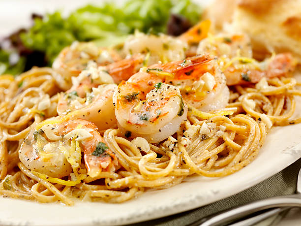

Shrimp Scampi Recipe

Shrimp Scampi with Pasta
Shrimp scampi with linguine is the ultimate seafood pasta dish.
Works with any kind of pasta; angel hair is less filling.
Ingredients Needed
- Shrimp
- Pasta
- Butter
- Olive Oil
- Shallots and garlic
- White whine
- Lemmon juice
- Seasonings
- Parsley
Steps
- Gather ingredients
- Boil linguine for 6 to 8 minutes
- Melt 2 tablespoons of butter with 2 tablespoons olive oil in large skillet over medium heat
- Cook and stir shallots, garlic, and red pepper in the butter until shallots are translucent, 3 to 4 minutes
- Season shrimp and cook in skillet 2 to 3 minutes
- Pour white whine and lemmon juice into skillet and bring to a boil
- Add butter and olive oil to skillet and bring to a simmer
- Toss linguine, shrimp, and parsley in the butter mixture until coated; season with salt and pepper. Drizzle with olive oil.
- Serve